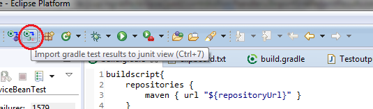
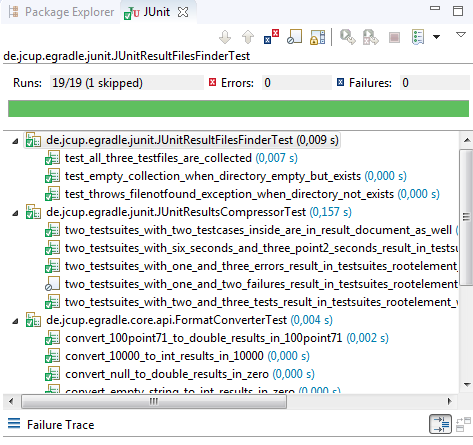

User guide
User guide
JUnit-Integration
Import test results from gradle
EGradle is able to import all junit test result files (XML format) of current root project into the eclipse junit view by one single click:

Partial import possible
When your gradle build shows test results and is not complete done, you can always import the current test results without waiting for build to finish!
So you can work on failed tests without waiting for full build is done... After full build you can simply import again and have the full results shown.
Resulting output
Output is as usual:
